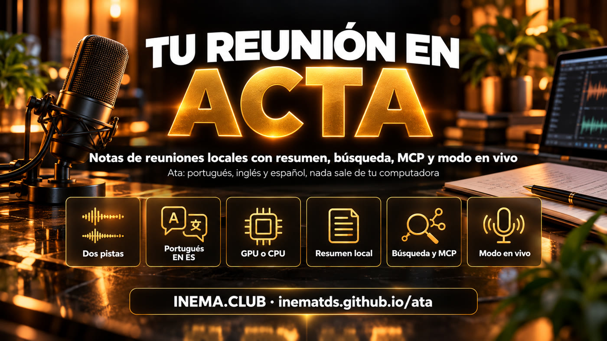

Notas de reunión local-first · pt-BR, EN y ES · código abierto
Tu reunión se vuelve acta, sin salir de tu máquina
Ata graba la llamada en dos pistas (lo que escuchas y lo que dices), transcribe en tu máquina con GPU o CPU y entrega la nota con cada intervención por persona, resumen, decisiones y acciones. Sin bot en la llamada, sin cuenta, sin API de pago.
Un notetaker de reuniones que habla español y respeta tu privacidad
Proyecto abierto de INEMA (MIT), inspirado en las ideas de CrunchLog, de Christian Landsteiner. Es una implementación independiente: no se usó ninguna línea de código suyo. La diferencia está en el portugués, el inglés y el español como idiomas de primera clase, Linux como plataforma principal, uso de la GPU, resumen local y modo en vivo sin servicio de pago.

🎧 Dos pistas, "el micrófono eres tú"
La salida de sonido (Meet, Zoom, Teams) y el micrófono se graban por separado. Todo lo que viene del micrófono es "Yo"; el gate quita el eco del parlante y la separación de hablantes solo actúa del otro lado.
🇧🇷 Portugués, inglés y español
El motor, la limpieza de muletillas ("né", "tipo"; "um", "uh"; "este", "o sea"), la nota, el resumen, el demo y la preparación cambian con el idioma de la reunión. Etiquetas: Eu / Pessoa 2, Me / Speaker 2, Yo / Persona 2.
🔒 Local por defecto
La transcripción (NeMo-Speech.cpp en la GPU u onnx en la CPU), el resumen (Ollama), la búsqueda y el modo en vivo corren en tu máquina. Claude o Codex por suscripción son opcionales y solo reciben texto, nunca audio.
Cómo funciona
De la tecla al acta, en un solo camino
Cada reunión se vuelve una carpeta (el bundle ata/1) con far.wav, mic.wav y meta.json. Todo lo que viene después (palabras, intervenciones, resumen, nota, índice) es derivado y se puede rehacer.
ata toggle→far.wav + mic.wav→transcripción por pista e idioma→el gate quita el eco→quién habló (+ voces conocidas)→intervenciones + limpieza→resumen JSON→nota + búsqueda + segundo cerebro
Grabación en los 3 sistemas
Linux: PipeWire (pw-record, con alineación de las pistas por el eco). Windows: WASAPI loopback. macOS 14.2+: helper Swift con process tap (código fuente incluido).
Motores intercambiables
Principal: NeMo-Speech.cpp (Parakeet v3, Nemotron 3.5 streaming y Nemotron 3 Diarization; CUDA en el DGX Spark/GB10, Metal en Mac). Respaldo: onnx-asr + sherpa-onnx en la CPU. Si el principal falla, pasa al respaldo y lo registra en la nota.
Lee CrunchLog
Las grabaciones de CrunchLog (bundle_version: 2) se leen y procesan como copia, sin tocar el original. Sirve para migrar y para comparar resultados.
Requisitos previos
Lo que necesitas
Python 3.12 viene con uv. Para el resumen local, Ollama; para la grabación en Linux, PipeWire.
uv
Gestor de Python de Astral.
# Linux / macOScurl -LsSf https://astral.sh/uv/install.sh | sh
# Windows (PowerShell)powershell -c "irm https://astral.sh/uv/install.ps1 | iex"
Ollama (resumen local)
El valor por defecto es qwen3.6:35b-a3b; se puede cambiar en el config.toml.
ffmpeg (importar mp3/mp4), Piper (voz del demo), Claude Code o Codex con sesión iniciada (resumen por suscripción).
which pw-record ffmpeg piper claude codex
Guía de uso · paso a paso
De la instalación a la primera acta
Comandos reales de Ata 0.1.0.
1
Instala
Los extras traen el MCP, el modo en vivo y el motor de CPU. Usa ".[all]" para todo, incluida la captura en Windows.
git clonehttps://github.com/inematds/ata && cd ata
uv tool install --python 3.12 ".[mcp,live,onnx]"ata --version # ata 0.1.0
2
Configura
Idioma por defecto, carpetas y quién hace el resumen. Elegir claude o codex activa el nivel de privacidad 1 y avisa que el texto sale de la máquina.
ata setup --lang pt-BR --summary ollama
# carpetas por defecto: ~/Ata/gravacoes y ~/Ata/notas · config: ~/.config/ata/config.toml
3
Instala y enciende el motor de transcripción
El install detecta el hardware: cuda13 en el GB10, metal en Mac, cpu en los demás. El motor corre solo en 127.0.0.1 y, en Linux, con tope de memoria.
ata engine install --dry-run # muestra lo que va a descargarata engine install --allow-unverified # 0.1.0: hashes aún no fijadosata engine startata engine statusata doctor# [ok]/[warn]/[fail] por ítem; exit 0 = listo
4
Primera acta: el demo
Una reunión inventada, con guion propio en cada idioma (3 personas, números, una decisión, dos acciones y una pregunta abierta), pasa por el pipeline real. Con Piper, las voces se sintetizan; con --no-tts, el audio es sintético y sirve para probar sin modelo.
ata demo --lang pt-BR
ata demo --lang en --no-tts
# note: ~/Ata/notas/2026-10-05-2111-revisao-do-mare-app-de-hortas.md
5
Graba una reunión de verdad
Asigna ata toggle a una tecla (GNOME/KDE, PowerToys/AutoHotkey, Atajos de macOS, Stream Deck). En Linux, con otras tarjetas de sonido: ATA_FAR_TARGET y ATA_MIC_TARGET con el node.name de wpctl status.
ata toggle# empiezaata toggle# se detiene y escribe el actaata start --title "Kickoff Acme" --speakers 3 --lang pt-BR
ata status --json
6
Importa lo que ya tienes
Audio o video de cualquier formato (pasa por ffmpeg) se vuelve una reunión solo con la pista "far". Las grabaciones de CrunchLog también entran.
ata import entrevista.mp4 --lang es --title "Entrevista Lucía"ata process --dry-run ~/CrunchLog/recordings/2026-10-05-1642-demo
# bundle crunchlog/2 lido: 2 tracks, offsets={"far": 0.0, "mic": 0.0}
7
Ajusta el acta
Pon nombres, reprocesa con el número correcto de personas, exporta subtítulos. Tus anotaciones van en el my-notes.md de la carpeta de la reunión y entran en el resumen.
ata speakers latest "Persona 2=Ana""Persona 3=Bruno"ata process latest --speakers 4
ata rerender latest
ata export latest --format srt # srt|vtt|txt|json|md|csv
8
Busca y pregunta en todas las reuniones
El índice SQLite junta búsqueda por palabra (FTS5) y por significado (vectores de Ollama). Cada fragmento viene con [reunión, mm:ss].
ata search"fecha de lanzamiento" --since 30d
ata ask"¿qué decidimos sobre el lanzamiento?"# [Revisão do Maré app de hortas, 01:00] Eu: ...ficou definido que lançamos a versão dois no dia 14 de novembroata actions --owner Ana # acciones abiertas entre reunionesata actions --done <id> # la marca como hecha (id del --json)
9
Prepara la próxima reunión
La agenda junta acciones abiertas, decisiones y preguntas de las reuniones con ese cliente. Los ítems (qN) se marcan solos cuando la reunión siguiente los responde, incluso en vivo.
ata prep"acme" --calendar "Jue 14h, Ana y Bruno"# ~/Ata/notas/2026-10-06-acme-preparacao.md
10
Modo en vivo
Durante la grabación, transcribe las dos pistas en tiempo real con Nemotron 3.5 streaming local, guarda las intervenciones en live/turns.jsonl y marca la agenda. Nada de servicio de pago.
ata start --title "Acme semanal"ata live startata live tail# muestra las intervenciones a medida que llegan
11
Reconoce voces (opcional)
Desactivado por defecto, porque la voz es un dato biométrico. Con [voices] enabled = true, registra una voz y "Persona 2" pasa a ser "Ana" en las próximas reuniones. Queda solo en tu máquina y se puede borrar.
ata voices enroll Ana latest "Persona 2"ata voices listata voices forget --all
12
Dashboard
Grabar y detener, escuchar las pistas, transcripción clicable, renombrar hablantes, búsqueda y modo en vivo, en PT, EN o ES. Solo escucha en 127.0.0.1; la primera visita usa el enlace con el token.
ata dashboard# http://127.0.0.1:47530/
Agentes y segundo cerebro
Tus reuniones se vuelven memoria de tus agentes
Ata fue pensado para agentes: el servidor MCP, las skills y el Markdown son interfaces de primera clase.
Cada reunión se vuelve fontes/AAAA-MM-DD-slug.md (tipo fuente, subtipo reunión) y las decisiones entran en decisoes/registro.md. Los archivos que editaste nunca se sobrescriben.
ata connect cerebro --dir ~/meu-cerebro
ata connect obsidian --vault ~/Obsidian
🧩 Skills y plugin
Cinco skills para Claude Code y Codex: meeting-notes, action-items, meeting-prep, ask-meetings, meeting-to-wiki. El plugin está en .claude-plugin/. Agentic OS de Jack Roberts también está soportado (opcional).
ata connect agentic-os --dry-run
Pantallas reales
El dashboard con las reuniones del demo
Capturas de la versión 0.1.0 con las tres reuniones de demostración (pt-BR, en, es).
Vista general: grabar y detener, estado del grabador y últimas reuniones.Reunión: resumen, temas, decisiones, acciones con responsable, preguntas, hablantes renombrables y transcripción clicable.Reuniones: lista con filtro por título, duración y número de intervenciones.Búsqueda: lo que se dijo sobre un tema, en todas las reuniones, con el momento exacto.En vivo: las intervenciones llegando durante la reunión.Configuración: idioma, motores, resumen y privacidad.
Estado y privacidad
Lo que está listo y lo que falta medir
Transparencia sobre la versión 0.1.0.
Listo
Todas las fases implementadasGrabación en los 3 sistemas, pipeline, nota trilingüe, resumen, búsqueda, preguntas, agenda, acciones, voces, conexiones, MCP, dashboard, modo en vivo, demo, doctor y bench. Más de 450 pruebas automáticas, sin red y sin modelos.
Probado
Grabación real en LinuxCaptura por PipeWire probada de verdad en un DGX Spark (GB10, ARM64).
Por medir
Motores realesNeMo-Speech.cpp, onnx y Ollama están implementados pero aún no se midieron en esta versión. El formato de la API de NeMo-Speech.cpp sigue lo documentado en src/ata/engines/nemo.py, y los hashes de las descargas aún no están fijados (por eso el --allow-unverified).
Por probar
Windows y macOSLa captura en Windows está implementada; el helper de macOS viene como código fuente Swift, aún sin compilar.
Nivel 0
Privacidad por defecto: nada sale de la máquinaLa transcripción, el resumen con Ollama, la búsqueda y el modo en vivo son todos locales. El nivel 1 (Claude o Codex por suscripción) envía solo texto, con las herramientas desactivadas. Los logs nunca contienen texto de reuniones. ata privacy <reunión> muestra quién tocó cada grabación.